- 2025-10-24
- My profile:
- I currently have 363 twitter followers (https://x.com/alexislearning)
- I used to have ~750 until I got suspended (because they thought I was a bot)
- Twitter profile analysis via an app 2025-10-25
- I’ve been on a like, “becoming a main character” arc (e.g. Simon Ohler did a speech at his birthday party about this that he said was largely directed at me, lol)
- (I also have 75 Substack subscribers, but I don’t wanna think about Substack right now)
1. What’s the point in having more twitter followers?
- Meh:
- Something about twitter being a serendipity engine… uninspiring as a story atm IMO (but clearly valid)
- Something about twitter being a way to make friends… also uninspiring atm
- Ultimately there is a bit of a sense of it actually not mattering all that much…
- Actually, I think what matters to me is the main character thing of like, choosing to step into a bigger role, choosing to be more useful and valuable, etc. Like, I don’t have to, I can vibe in obscurity, that’s totally fine, I’m having a nice time with the following that I currently have. But it’d also be cool to be like “you know what, let’s take this a little more seriously”. This is actually a thread I’m on more broadly, stepping into a bigger role, a bigger story
Stepping into a bigger story
-
Recently I’ve started dressing better and it feels like a similar thing somehow. Like, I am stepping into my handsomeness via adding a necklace every day, a gold ring, nice shirts, a nice watch, an ear-ring etc (lol), and it’s made me feel pretty swaggy, and it is changing how I show up and am received in the world (legit, cool things have happened as a result of this).
-

- 👆 Like, I really like this outfit, having a necklace, having an 80/20 beard, lol
-
So, taking my twitter seriously feels like a similar thing. It’s all fractal versions of the same thing → taking myself seriously, valuing myself highly
-
What’s that thing people say of like “the way you do something is the way you do everything”.
-
So like, choosing to do twitter well, to be useful and of service and a good presence, to be a useful player who is proudly stepping into their role, and also, taking myself seriously as someone who has grown and is on an interesting path etc
- (In an aletheia session recently I had this steely determination feeling and this felt sense of being a knight, this silver sense of having a mission and a shiny set of armour and a sword etc)
2. Ok so what should I do?
- I have a sense that some pretty small changes could help a lot. E.g., intentionally thinking “how can I flesh out this idea a bit”/“how can I make this more useful/interesting” → that shit is useful for me too, which is really what matters more
Auditing my last 50 tweets
- Profile:
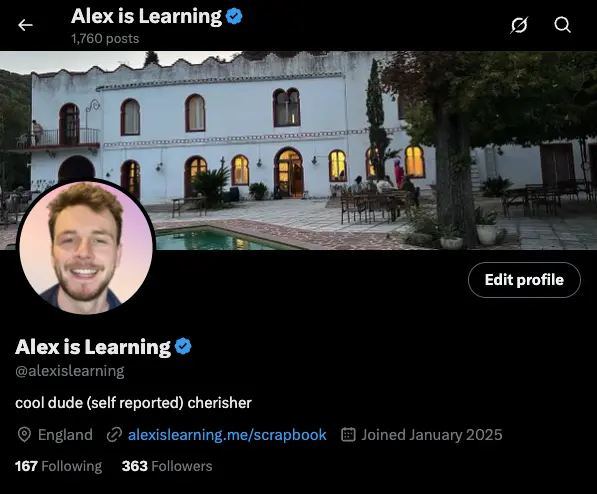
- Likes on last 50 tweets:
- Average = 19 likes per tweet (pulled up by outliers)
- Median = 9 likes per tweet
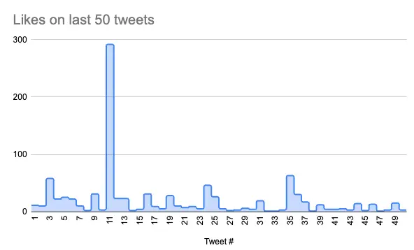
- I want to aim for my tweets to be 5x as good (median of 50 likes per tweet)
- That’s kinda it IMO, that’s the thing that can be focused on immediately
- Easy to remember too, and feels doable
🚨 Goal !!!
Aiming for median of 50 likes per tweet, AKA for my tweets to get 5x better
3. How do I make my tweets 5x better?
1. Don’t tweet non-interesting things
- Easy one → don’t tweet non-good stuff
- AKA improve my signal-to-noise ratio
- There’s something in me of like, I wanna honour my experience and tweet lil mundane things like this. But idk, maybe an alt account? Maybe a message to a friend? Maybe just like, write the thought down in an apple note?
2. Avoid vagueness/poor wording
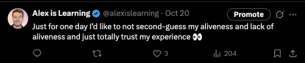
- 👆 this is a very profound thread for me, but the tweet is vague and shrug-worthy
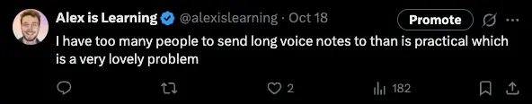
- 👆 This too. Could have been improved by telling a story, reflecting on what life used to be like re: this
- 👆 kinda hard to parse, could’ve been worded in a much more compelling way
3. Flesh things out - make them interesting
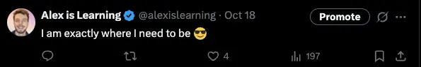
- 👆 this is a throwaway thought that doesn’t tell you anything
Summary
- Is the key thing just “make tweets useful/interesting/tell a story”
- “Is this useful/interesting/well written?“
4. Good tweets of mine
1. Life update that points at growth
- (These all probably succeed at the “how to make tweets 5x better” things too → they won’t be vague, they won’t be non-interesting, they will be fleshed out/complete-feeling)
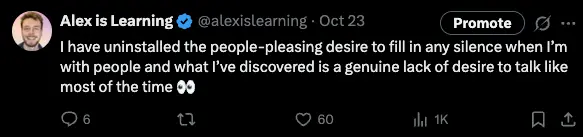
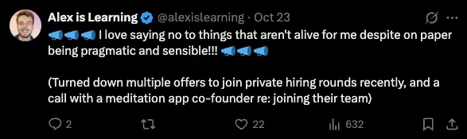
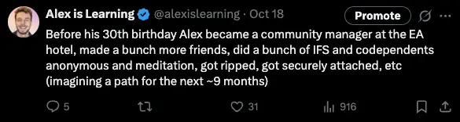
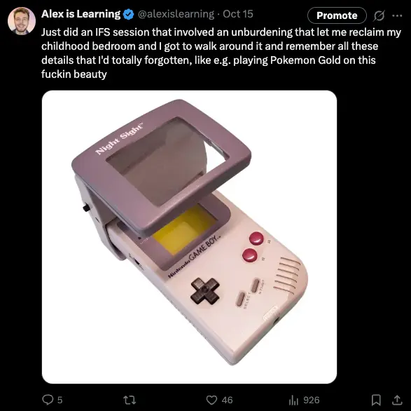
2. Life update that points at growth + possible thing to do
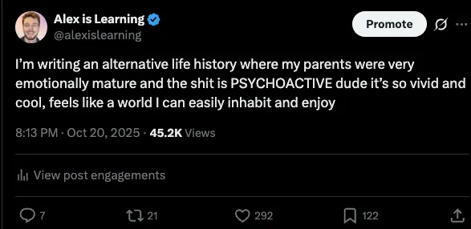
- 👆 bookmarks = people thinking “I should return to this”
3. Good, unique writing
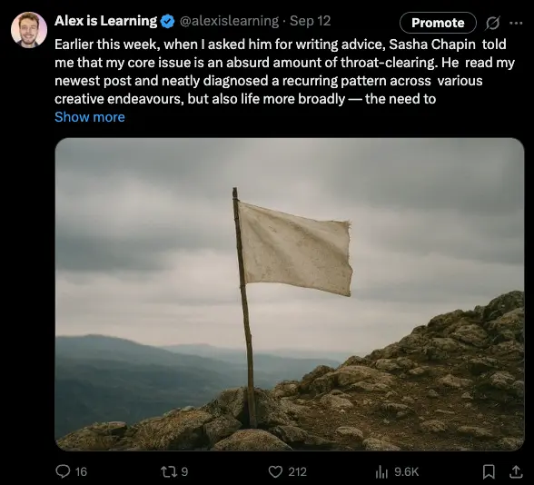
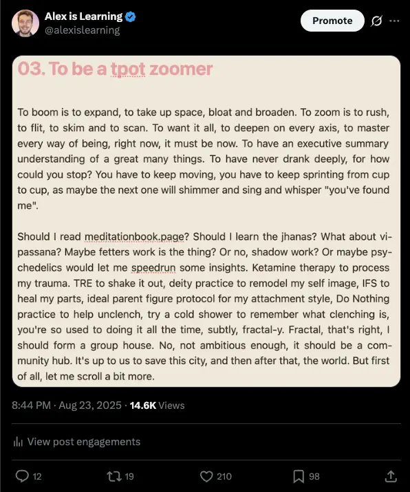
4. Place to share resources
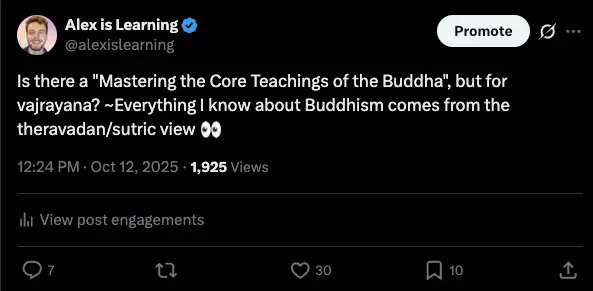
Appendix
My top tweets as of 2025-10-24, ascending order
1 - Alternative life history
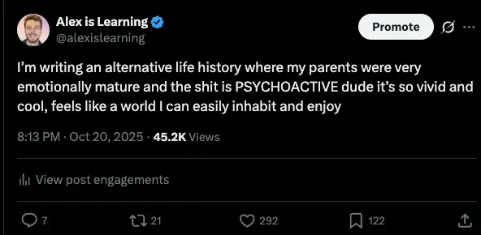
- https://x.com/alexislearning/status/1980351614209913159
- Well written, punchy, relatable, rare modality, sounds doable
2 - My Substack post that name-drops Sasha Chapin
-
- https://x.com/alexislearning/status/1966526715288564028
- Name drops a key tpot person, interesting opening
3 - Art about tpot
- ~Everyone reading this will be like “oh shit, tpot-related art, cool”, it’s a rare “in”
- It’s very zeitgeist-y
4 - Life changing blog post re: learning
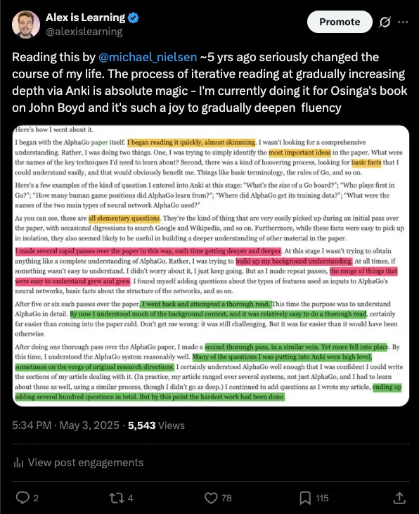
5 - Dropping people-pleasing
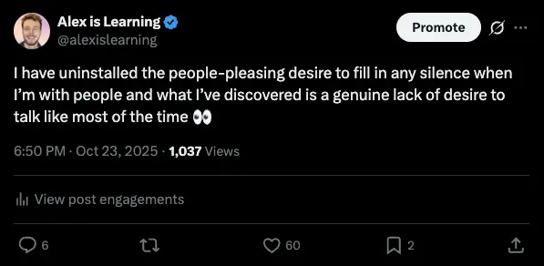
6 - Touch starvation
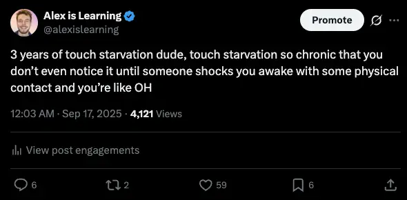
7 - Wanna be in a relationship
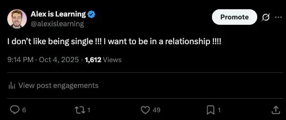
8 - Childhood bedroom unlock via IFS
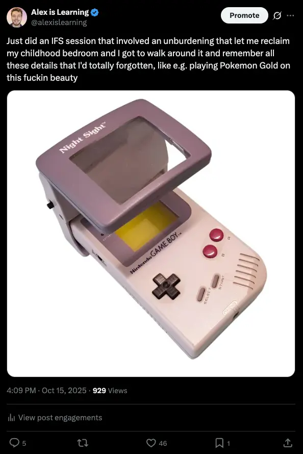
Has anyone written guides on how to tweet better?
-
After checking out the below links, I can’t find anything that isn’t just aimed at beginners who are just starting out!
Visa’s 3 types of tweeting
-
From here
-
Friendly → “where are my people!”, shitposting
-
Ambitious → “what can I accomplish?”, sermonposting
-
Nerd → “I want to know!”, nerdposting
Looking at other people’s good tweets
- Can spot patterns & get inspo by looking at some people I like
- Guide to tpot slideshow I made in idk Jan 2024 to showcase some tweets I really like
Brooke
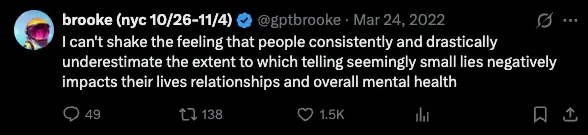
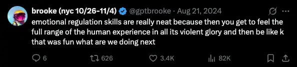
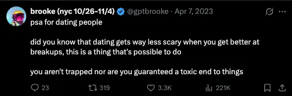
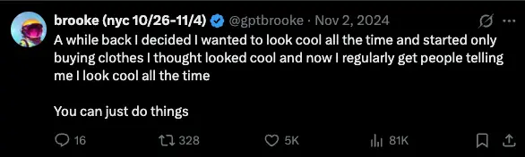
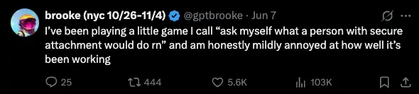
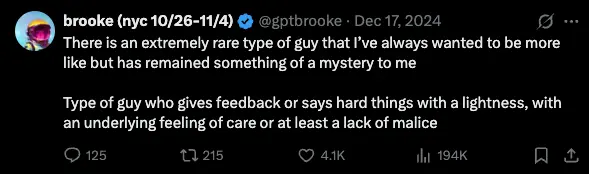
Jess
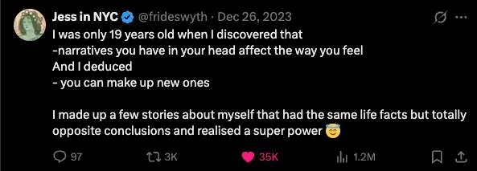
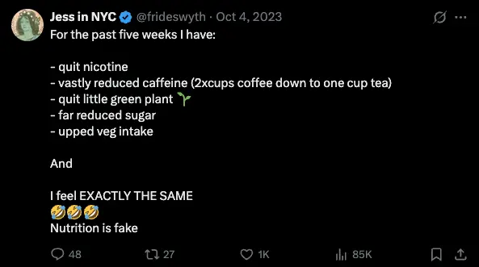
Sasha
- Fucker deleted his twitter again I guess? To the slide deck!
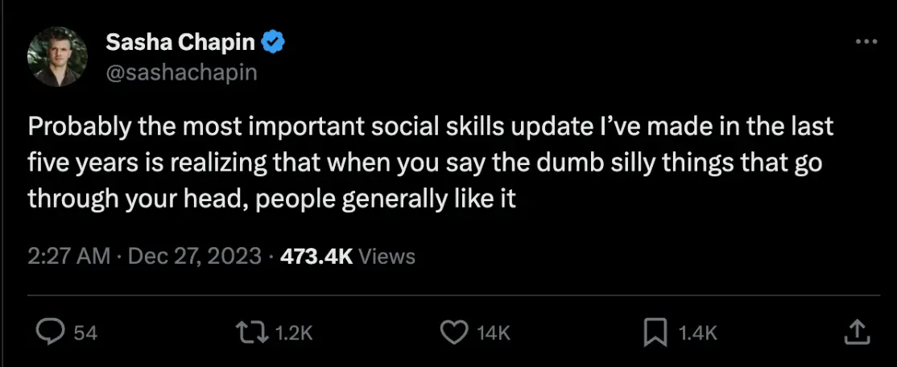
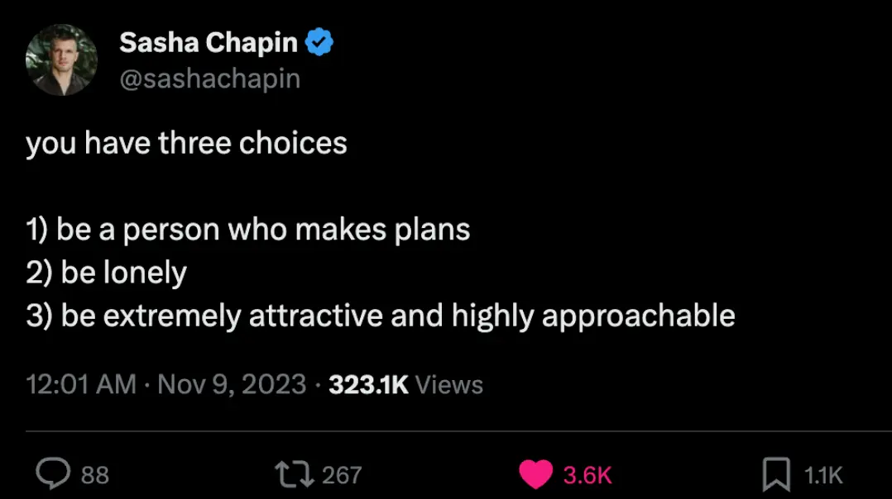
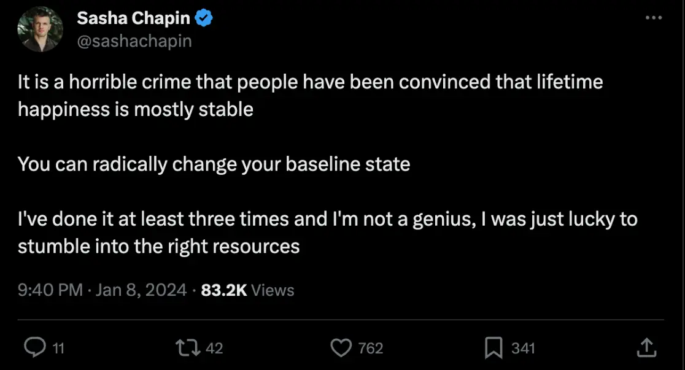
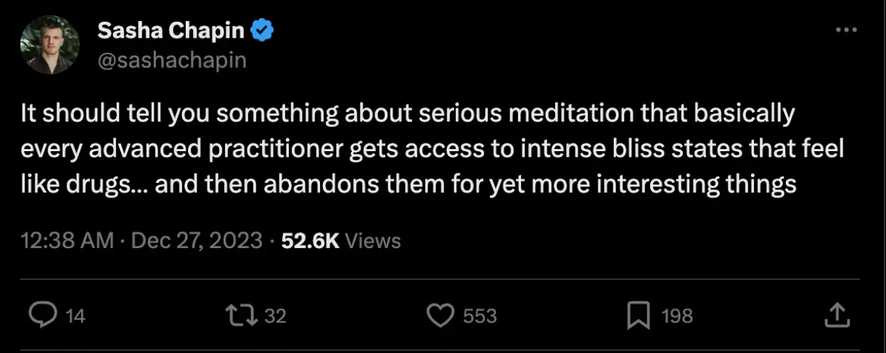
Maebe
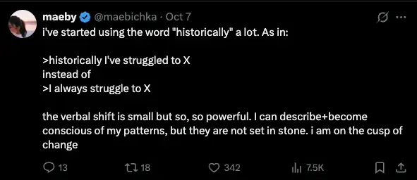
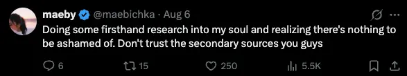
Brent
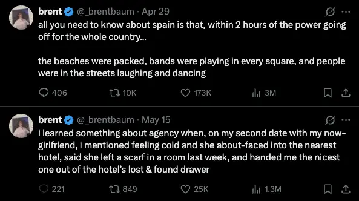
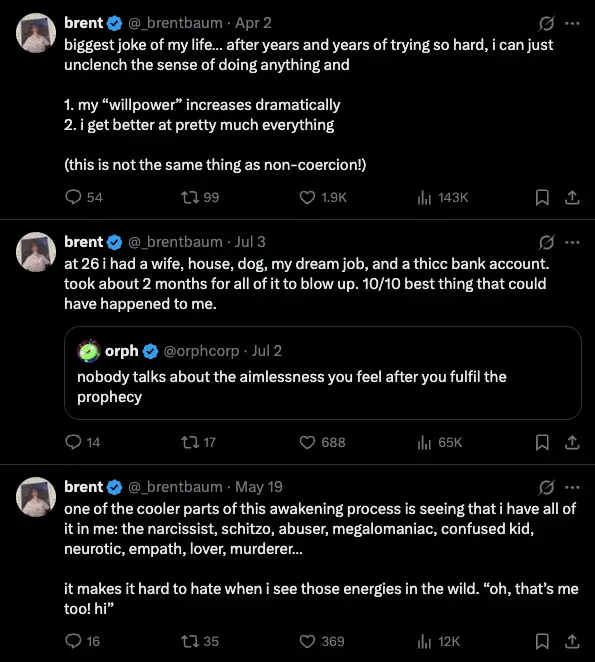
Simon
Jono
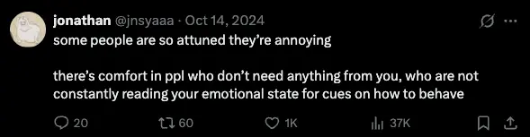
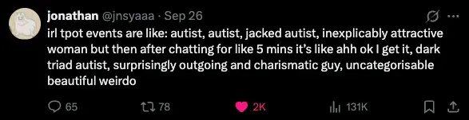
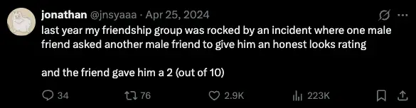
Rich
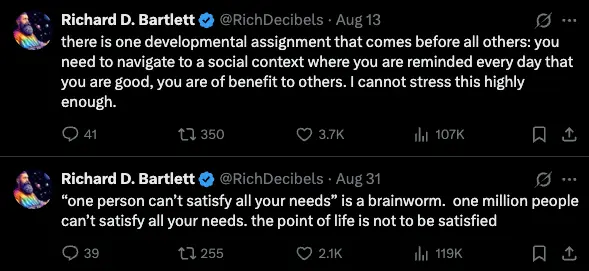
5. Conclusion
Ok what I have learned from looking at all these good tweets
- Have interesting ideas and communicate them well
- Lol
Cynical
- There’s also more kind of cynical intentional stuff that could be done (Brooke Bowman did encourage me to do this kinda stuff lol, although she didn’t point at specific things)
- I can imagine e.g. quote-tweeting more stuff to build on other people’s ideas/starting points, resurfacing banger tweets from other people, etc
Feedback from others
- Simon:
- Write tweets in such a way that they read well, that they have a good kind of poetic flow to them, that they sound good when read out loud
- Rich:
- Just tweet more bro
- (This is the Rivalvoices approach too)
People are more likely to read a thread than a long tweet?
- From Morning pages 1 - on writing more → tweeted a vignette (as a long tweet) and a thread
Some big accounts say “just tweet more”, I like Vivid’s advice more
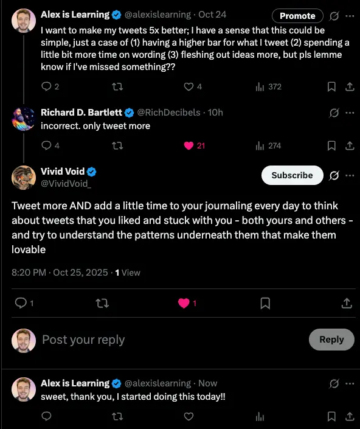
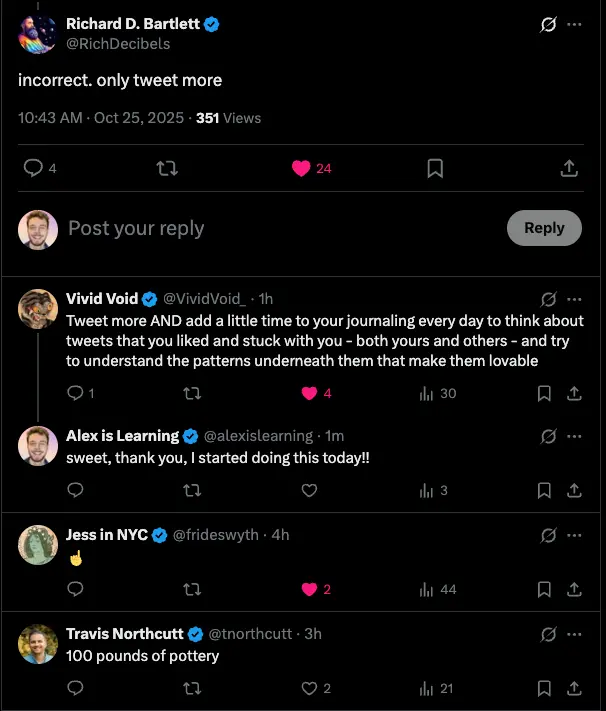
- I have a sense that quantity isn’t everything, that of course thinking about writing well, memetic fitness etc makes sense. So I like Vivid’s thing